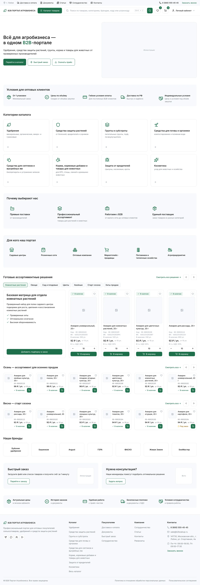
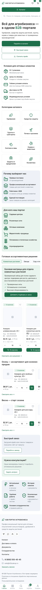

Страницы портала
Макеты страниц
Страницы портала, нарисованные по дизайн-системе и вашим макетам, — так они будут выглядеть в браузере ещё до вёрстки. Кадры в ширинах 1440 и 375. Нажмите на кадр, чтобы открыть его крупно; стрелки листают галерею. Статус каждой страницы — на странице «Ход работ».
01
Главная
Первый экран, условия для оптовых клиентов, категории, ассортиментные решения, сезонные подборки и бренды.
Главная страница
Первый экран, условия для оптовых клиентов, категории, преимущества, ассортиментные решения, сезонные подборки, бренды.
{kind=link}

Главная страница, десктоп
Первый экран с тремя кнопками, условия для оптовых клиентов, восемь категорий каталога, преимущества, сегменты аудитории, готовые ассортиментные решения с подборкой и каруселью, сезонные подборки, бренды, два промо-блока, предфутерная полоса и подвал. Гость видит цены базового опта.
Телефон · 375
{kind=link}

Главная страница, телефон
Те же блоки в одну колонку: мобильная шапка, кнопки на всю ширину, списки вместо плиток, карусели и бренды прокручиваются по горизонтали, внизу нижняя панель навигации.